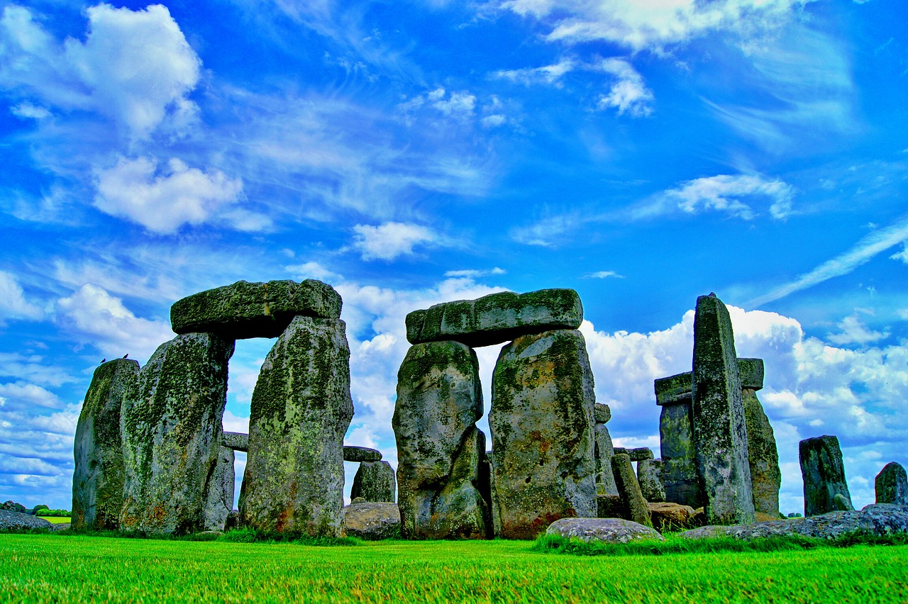

Stonehenge


Stonehenge, situé dans la plaine de Salisbury dans le sud-ouest de l'Angleterre, est un grand monument mégalithique empreint de mystère. Cet ensemble impressionnant dont l’édification date du Néolothique et de l'Age de bronze est la plus grande structure préhistorique d'Europe.
Présentation
Stonehenge, dont le nom signifie "les pierres suspendues", est un grand monument mégalithique érigé entre 2800 et 1100 avant J.C.
Il se trouve en Angleterre, dans le Comté du Wiltshire, à 13km au nord de Salisbury et 4km à l'ouest d'Amesbury.
Ce site impressionnant est inscrit au patrimoine mondial de l’UNESCO, de même que le cromlech d'Avebury situé à une trentaine de kilomètres au nord.
Ce monument primitif formé d'un ensemble de structures circulaires concentriques est l’un des plus fameux au monde.
Histoire du site
Les pierres de Stonehenge ont reposé sur les collines du Comté de Wiltshire pendant près de 4000 ans avant que les archéologues ne tentent de percer leur mystère.
Les premières fouilles scientifiques ont été menées sur le site à partir de 1901 par le professeur Gowland.
Les travaux de plusieurs archéologues ont ensuite apporté une meilleure connaissance de ce site exceptionnel : en 1919, le colonel William Hawley entreprit des restaurations et étudia la plupart des cavités existantes.
A partir de 1950, l'archéologue Richard J. C. Atkinson mena des fouilles de grande ampleur ainsi qu’une importante campagne de restauration (entre 1958 et 1964).
Le procédé de datation au Carbone 14 lui permit de reconstituer l'histoire du monument.
La structure de Stonehenge
Stonehenge se compose de 4 ensembles concentriques de pierres dont le diamètre total excède les 100 mètres.
L'ensemble extérieur est constitué de grands blocs de grès rectangulaires qui entourent un deuxième cromlech de blocs plus petits.
A noter : un cromlech est un monument mégalithique caractérisé par un alignement de monolithes verticaux formant une enceinte généralement circulaire.
A l'intérieur des cercles se trouvent d’autres pierres monumentales, hautes d'une dizaine de mètres, et un ensemble de trilithes en grès. Ces trilithes, composés chacun de 2 blocs verticaux surmontés d'un linteau, sont disposés comme des portiques en forme de fer à cheval.
Le monument est entouré d'un fossé circulaire de 104 mètres de diamètre et d'un talus présentant 56 cavités de grandes dimensions : les trous d'Aubrey.
On a retrouvé dans ces cavités des fragments de Charbon de bois, d'os humains carbonisés et de petits objets comme
des épingles à Cheveux en os ou de longues baguettes de silex taillé.
Le site présente également plusieurs dizaines de cavités funéraires plus petites, dont le contenu est similaire. Stonehenge aurait ainsi été utilisé comme cimetière à crémation pendant plusieurs siècles.
Mystères et légendes de ce site
Les immenses monolithes de grès de Stonehenge ont été extraits de carrières situées à 40km au nord, dans les Marlborough Downs.
Le transport de ces blocs pesant jusqu’à 50 tonnes chacun représente un chantier colossal qui a vraisemblablement mobilisé des milliers d'hommes durant des décennies.
Pendant plusieurs siècles, une légende populaire a été associée à l’édification de ce monument.
Le roi Aurélius aurait consulté Merlin l'enchanteur qui lui aurait conseillé d'envoyer ses hommes dérober le Ballet des Géants. Ses guerriers étant incapables de lever des pierres aussi lourdes, Merlin aurait prononcé une formule magique pour les rendre légères.
Les pierres auraient ainsi pu être embarquées et amenées sans difficulté à Stonehenge.
Par ailleurs, la fonction de ce monument a inspiré de nombreuses théories, dont la plupart sont liées à la prédiction des phénomènes astronomiques : éclipse de soleil et de lune, solstice et équinoxe, calcul du calendrier selon les positions du soleil et de la lune par rapport à la Terre.
COMMENT VISITER STONEHENGE ?
Le solstice d’été est la période la plus appréciée des visiteur.ses : le soleil se lève derrière la Heel Stone, et ses premiers rayons éclairent le cœur de Stonehenge. Des fouilles archéologiques ont révélé qu’autrefois, une pierre accompagnait peut-être la Heel Stone, permettant aux deux pierres d’encadrer le lever du soleil. Le solstice d’été est l’une des rares occasions où le cercle intérieur est ouvert au public.
Stonehenge est ouvert toute l’année, et les visiteur.ses peuvent réserver des billets à heure fixe pour assurer leur entrée sur le site. Une allée entoure le célèbre cercle, mais pour des raisons de conservation, le public n’est généralement pas autorisé à y pénétrer. Cependant, de nombreuses expériences vous attendent. Le site est entouré d’une vaste étendue de champs : un lieu de promenade idéal, parsemé de terrassements, de cimetières et d’autres monuments.
Lors du solstice d’hiver, en tournant à 180 degrés en direction du sud-ouest, le soleil se serait à l’origine couché entre les deux montants du trilithe le plus élevé. Cet effet aurait disparu suite à la chute de la moitié du trilithe dans les millénaires qui ont suivi sa construction.
COMMENT S’Y RENDRE ?
Un service de trains réguliers permet de relier Londres, Bristol/Bath et Southampton à Salisbury, situé à 30 kilomètres de Stonehenge. Des bus sont également disponibles via la compagnie Salisbury Reds. De Salisbury, prenez un taxi ou montez dans le bus (accessible aux fauteuils roulants) jusqu’au centre d’accueil de Stonehenge. Enfin, une marche de 2,5 kilomètres (25 minutes) vous mènera au site. Pour celles et ceux qui ne peuvent pas marcher, un service de bus gratuit assure la liaison entre le parking réservé aux personnes handicapées et Stonehenge.
Bonne Découverte du Stonehenge!